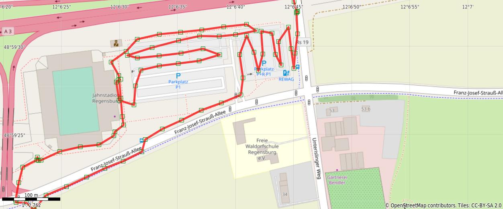
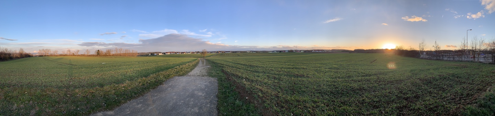
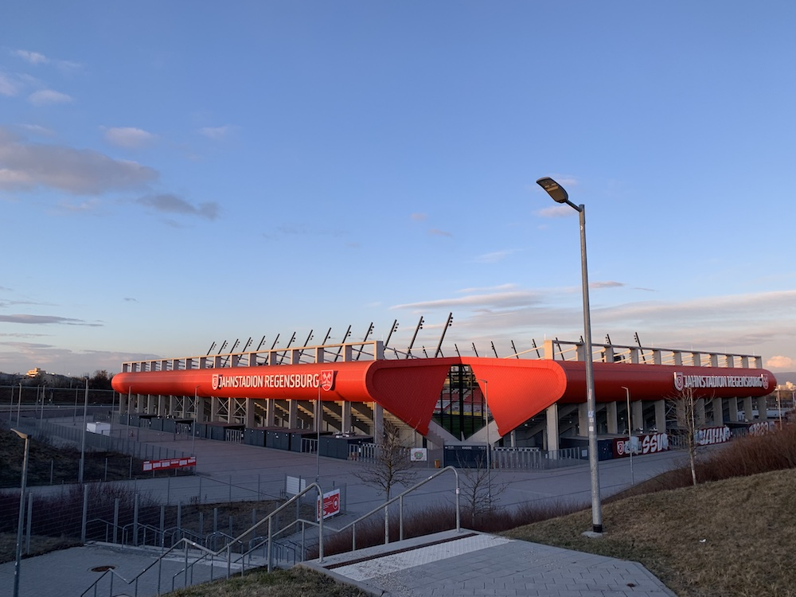

Mar 16, 2021
It was time to donate blood again today.
I didn’t get my morning walk in, so I took a three kilometer stroll up to the Jahnstadion after work and got there dreadfully early for my 18:30 appointment. So I kept strolling and killed a little time, padding out my walk to five kilometers.
I had my phone set to mark my position every 30 seconds, and that makes my traversal of the parking lot rows look sloppy. I suppose that’s the trade-off for reduced impact on the battery:


Distance: 5.0 km
Time: 1:21
Calories: 687
Calories from fat: 36%
Average Heart Rate: 112
Maximum Heart Rate: 135
Fat Burn: 1:10
Fitness: 0:11